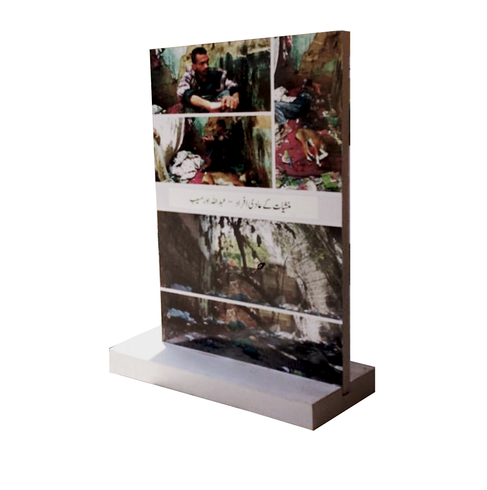
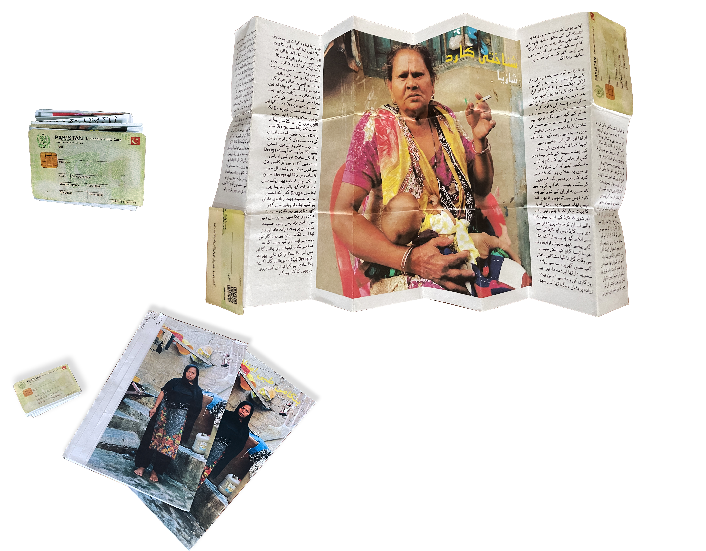
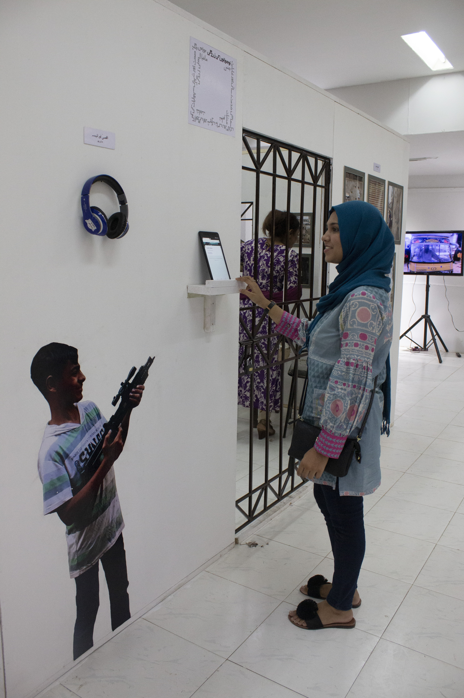

Look at The City from Here
Client:
The School of Writing (TSW)
Role:
Assistant Curator
Year:
2024
Team:
Shahryar Khan (Product Manager)
Client:
The School of Writing (TSW)
Role:
Assistant Curator
Year:
2024
Team:
Shahryar Khan (Product Manager)

6 mini-exhibitions held local union councils and 1 Mega Exhibition held at the Karachi Arts Council.
We organised each project by highlighting major themes that came across in each project. Noting where these themes were most prominent.
Focus: Engage local residents and encourage a culture of engaging with photography and storytelling.
Sites: As the local neighbourhoods lacked traditional spaces for residents to come into contact with art, we wanted to find local equivalents. So we selected sites based on accessibility, activation in community, and context.
Exhibition Format: Given the timeline for these exhibition we selected 6-8 stories to present as posters pasted on a stand and presented the remainder as mounted frames on surfaces present in the localities.


For the mega exhibition we took a slightly different approach and chose to organise the stories by the themes highlighted during the local exhibition. Given the scale of the exhibition we wanted to make the stories and the exhibits more interactive and thoughtful. This is why we chose to make themed exhibit spaces with multimedia presentation of the photographs and write ups.
We adapted two photo essays into a brochure and pamphlet form because they had lengthy write ups. One was about an Afghan woman who despite being granted asylum and living in Pakistan for x years was not granted a National Identity Card (NIC). For this story we decided to adapt the brochure into an accordion fold to make it resemble an NIC when folded and then open to reveal the write up.

As a common theme in many of the photo essays related to water and sanitation we decided to create an immersive installation with pipes to display them. The structure was built with PVC pipe and the photographs were fixed on. We also placed buckets of water in the installation while playing a looped audio of water dripping to emphasise the wastage of clean water in Karachi.

With each photo essay the curatorial team reflected on the conditions in our own neighbourhoods and became aware of our own privilege. We wanted to make this reflection an active part of the exhibit so we developed a digital privilege walk. For each theme we developed a question and form that was linked to a live updating infographic at the start of the exhibit. Visitors were asked to answer the question on tablets placed in each installation and reflect on their own privilege. The questions were presented in english due to limitations of the digital form but the infographic was presented in urdu.

